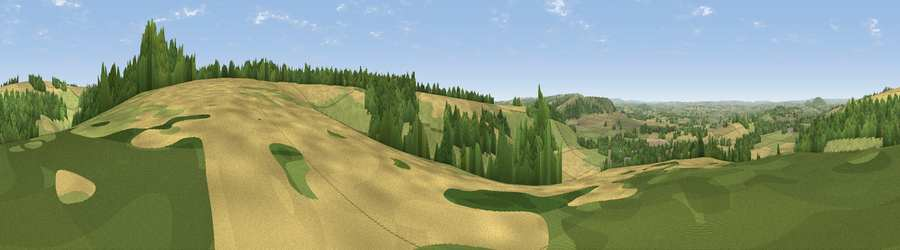

Viewpoint near Iwerne Minster
#16043 in England · top 20% of its area beats it · near Iwerne MinsterWhere it is
The exact computed spot (ST 87725 14725). Click the marker for map links.
The view, rendered

A 360° render of this exact spot computed from the terrain model, tree cover and land cover — summer colours, afternoon light, calibrated against photographs of famous viewpoints. Real trees, hedges and buildings will differ in detail.
The panorama
Grey silhouette: terrain skyline in each direction (720 bearings, Earth curvature and refraction included). Dashed green: skyline with trees (+15 m) and buildings (+8 m) as obstacles. Blue strip: how far the ground is visible on each bearing.
Where the view opens
Wedge length = distance to the farthest visible ground on that bearing (vegetation-aware). Rings at 10, 25 and 50 km.
What fills the view
37% grassland · 36% cropland · 26% woodland ·
Angular shares of the visible panorama (visual magnitude), not map area. Landscape diversity 0.49 (0–1 Shannon).
Key numbers
More beautiful places nearby
The staircase of upgrades: each row has a higher view potential than everything closer. Driving times are estimates from straight-line distance, calibrated against real road routing — check an actual route before setting out.
| Place | Direction | Drive | Score |
|---|---|---|---|
| Viewpoint near Compton Abbas | N · 3 km | ~7 min | 62.4 |
| Hambledon Hill | SW · 4 km | ~9 min | 72.7 |
| Hambledon Hill | WSW · 4 km | ~9 min | 74.6 |
| Viewpoint near Berwick St John | NE · 8 km | ~16 min | 78.2 |
| Viewpoint near Kimmeridge | S · 33 km | ~51 min | 82.9 |
| Viewpoint near Kimmeridge | S · 33 km | ~51 min | 84.1 |
| Whiteway Hill | S · 34 km | ~52 min | 85.0 |
| Rings Hill | S · 34 km | ~52 min | 87.5 |
50.93184, -2.17604 · source: screening · position refined by local search. Computed location — check access rights before visiting.